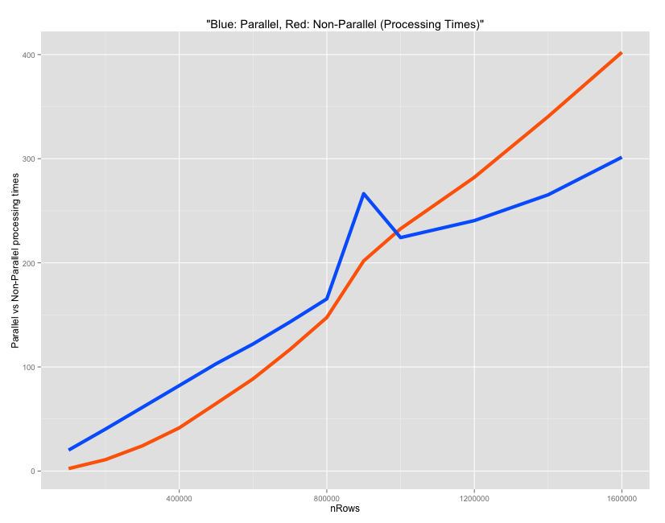

R provides a number of convenient facilities for parallel computing. The following method shows you how to setup and run a parallel process on your current multi-core device, without need for additional hardware.
Setting up for parallelization
The number of parallel processes you can run simultaneously depends on the number of cores in your machine. If you are on a Windows PC, open ‘Task Manager’ => ‘Performance’ tab, and count the number of boxes below “CPU Usage History”. That is the maximum number of parallel processes you can run in your computer. You can practically use all of them for R computations, however, it is a good idea to leave out a core or two for background system processes. Here is how you can set up your R session for parallel processing:
# Registering cores for parallel process
library(doSNOW)
cl <- makeCluster(4, type="SOCK") # 4 – number of cores
registerDoSNOW(cl) # Register back end Cores for Parallel ComputingRunning the parallel process
Once the cores are set up to run computations in parallel, the ‘foreach’ loop (from foreach package) can run your functions in parallel by opening as many parallel R session as the number of cores you have registered. The difference between a regular for-loop and for-each loop is, the for-loop runs serially, i.e. your loop processes one value of loop-counter (i) at a time. While in for-each, the arguments you supply to the loop-counter (‘i’ in this case) will be run simultaneously at {number_of_cores_initialised} number of processes at a time. After running the functions defined inside the loop, it combines all the returned values based on the function supplied to the ‘.combine‘ argument.
Parallel processing: some simple examples
In the examples below, replace %dopar% with %do% to make it run as a non-parallel process.
Example 1
library(foreach)
foreach(i = 1:28) %dopar% {sqrt(i)} # example 1Example 2
# returned output values of the parallel process are combined using 'c()' function
foreach(i = 1:28,.combine = "c") %dopar% {sqrt(i)} # example 2Example 3
# returned output values of the parallel process are combined using 'cbind()' function
foreach(i = 1:28,.combine = "cbind") %dopar% {letters[1:4]} # example 3 Example 4
You can also create your own combining function as you wish.
# combine using your custom defined function: "myCustomFunc()" and store in 'output' variable
output <- foreach(i = 1:28, .combine = "myCustomFunc") %dopar% {
sqrt(i)
}myCustomFunc above is just a placeholder. ## Further Customizing for packages and output aggregation
You are nearly there, just a couple more things left. If you are using functions from packages loaded to your global R environment, they may not work inside the for-each loop, because, multiple R sessions are instantiated for each parallel process. So you need to define the packages you need inside the foreach loop in the .packages argument. Additionally, if you have a set of variables to iterate over in a separate R object (like a data frame), you can even pass it as a separate iterating variable (allRowIndices) in this case, in the foreach statement. Here is a sample of the code to show how it might look like.
Structure of a typical parallel processing code
allRowIndices <- c(1:nrow(inputData)) # assign row indices of inputData, that will be processed in parallel
output <- foreach (rowNum = allRowIndices, .combine = rbind, .packages = c("caret", "ggplot2", "Hmisc")) %dopar% {
# code to process each rowNum goes within this block.
# 'n' rows will be processed simultaneously, where 'n' is number of registered cores.
# after processing all rows, the returned value is combined using the function defined in `.combine` argument `rbind` in this case. The output thus aggregated is stored in output variable.
# Finally, the packages required by functions in this block has to be mentioned within .packages argument.
}
stopCluster(cl) # undo the parallel processing setupIn the above code, the main component of parallelisation is the foreach loop and the three arguments that go along with it. The first argument (rownum) here is a row counter that iterates through all the rows in ‘allRowIndices’. The second one, ‘.combine’ is a function that will be used to aggregate the results of all computations from the rows. In this case, ‘rbind’ will be used to append the results in rows. Finally, the third one ‘.packages’, states which all packages will be needed for the functions used within the ‘foreach’ block. Note that, even if you have already included the packages before calling the ‘foreach’, you need to re-specify within this block, since, new R sessions will be opened for the parallel processing. With all these defined, the computations will be done in parallel based on the number of cores you had registered earlier and the results get combined and stored in output.
A comparison between parallel and non-parallel process
To demonstrate the processing times, a simple math operation is performed on each row of a 4-columned matrix created below. The time taken by a parallel vs non-parallel process is compared as the number of rows in inputData is gradually increased.
inputData <- matrix(1:800000, ncol=4) # prepare input data
head(inputData)
#> [,1] [,2] [,3] [,4]
#> [1,] 1 200001 400001 600001
#> [2,] 2 200002 400002 600002
#> [3,] 3 200003 400003 600003
#> [4,] 4 200004 400004 600004
#> [5,] 5 200005 400005 600005
#> [6,] 6 200006 400006 600006
# For each row of inputData, we'll compute the output as follows:
row output = col1 * col2 + col3 / col41. Non-parallel version
output_serial <- numeric() # initialize output
for (rowNum in c(1:nrow(inputData))) {
calculatedOutput <- inputData[rowNum, 1] * inputData[rowNum, 2] + inputData[rowNum, 3] / inputData[rowNum, 4] # compute output
output_serial <- c(output_serial, calculatedOutput) # append to output variable
}2. Parallel version
library(doSNOW)
cl <- makeCluster(4, type="SOCK") # 4 – number of cores
registerDoSNOW(cl) # Register Backend Cores for Parallel Computing
allRowIndices <- c(1:nrow(inputData)) # row numbers of inputData, that will be processed in parallel
output_parallel <- foreach (rowNum = allRowIndices, .combine = c) %dopar% {
calculatedOutput <- inputData[rowNum, 1] * inputData[rowNum, 2] + inputData[rowNum, 3] / inputData[rowNum, 4] # compute output
return (calculatedOutput)
}